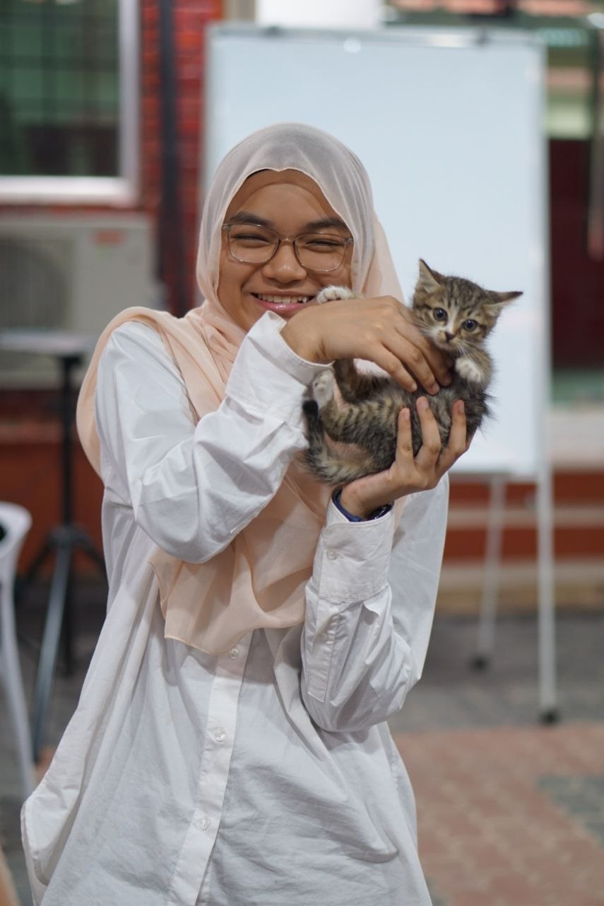

WELCOME TO MY E-PORTFOLIO
Hi, I'm Rania Adlyn ✦
First-year Data Engineering undergraduate passionate about transforming raw datasets into meaningful insights, building clean analytical tools, and crafting thoughtful software solutions.
About Me
A little introduction about who I am and what I study.

Rania Adlyn · UTM
Hello there!
I am currently pursuing a Bachelor of Computer Science (Data Engineering) at Universiti Teknologi Malaysia (UTM).
My academic interests include data modelling, programming, database architecture and cloud computing.
As a student, I believe in learning beyond the classroom through hands-on projects, technical workshops and collaboration with the computing community.
My long-term goal is to become a Data Engineer and contribute to building useful data solutions.
Bachelor of Computer Science (Data Engineering)
Universiti Teknologi Malaysia
Skudai, Johor, Malaysia
Relevant Coursework
- Programming Technique I (C++)
- Discrete Structure
- Digital Logic
- Technology and Information Systems
My Journey
Experiences, involvement and learning opportunities.
Active Member · PERSAKA
UTM Computing Student Association. Participating in opportunities to connect with peers and explore the computing community.
Technology Workshops & Industry Events
Exploring emerging technologies, cloud computing, artificial intelligence and data-related careers through technical events and industry talks.
Computer Science Learning & Projects
Developing foundational programming skills, computational thinking and problem-solving through university coursework.
Technical Toolkit
Technologies and skills I am learning and developing.
Programming & Querying
Tools & Environments
Core Competencies
Featured Projects
A collection of my academic and personal projects.

Academic Record & Grade Analyzer
A structured console application designed to process student performance data, calculate grades and generate statistical summaries using modular functions.

Exploratory Data Analysis
Exploring datasets through data cleaning, handling missing values, identifying patterns and presenting findings through visualisations.

Personal E-Portfolio
Designed and developed a responsive personal website using HTML and CSS to showcase academic development, technical skills and achievements.
My Artifacts
Presentations, infographics, certificates and other academic work that document my learning journey.
Industry Talk Presentation
Presentation slides highlighting key insights and knowledge gained from an industry talk.
Public Health England Case Study
Data engineering case study infographic analysing the 2020 COVID-19 Excel row-limit failure, pipeline lifecycle stages, and automated record count validation.
Certificates & Achievements
Certificates from technical events, workshops and learning programmes.
Let's connect and grow together ✦
Whether you're interested in discussing technology, data projects, internship opportunities or simply connecting, feel free to reach out.